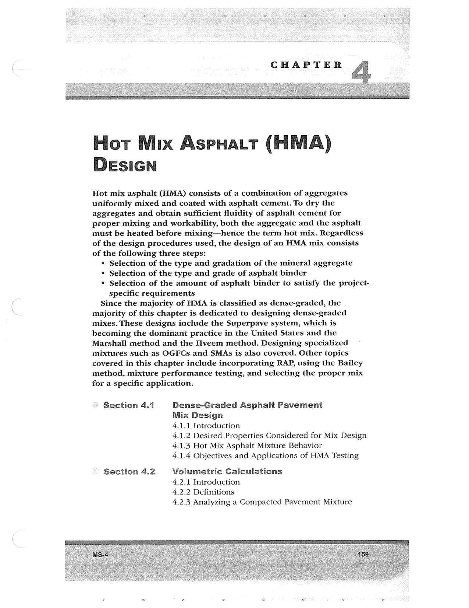

PDF page 193 · book page sequence 159


Searchable transcription
Unproofread OCR · 233 detected words; mean OCR confidence 92.44. Check technical values, symbols and table columns against the scan.
CHAPTER
Hot Mix AspHat (HMA) DESIGN
Hot mix asphalt (HMA) consists of a combination of aggregates uniformly mixed and coated with asphalt cement. To dry the aggregates and obtain sufficient fluidity of asphalt cement for proper mixing and workability, both the aggregate and the asphalt must be heated before mixing—hence the term hot mix. Regardless of the design procedures used, the design of an HMA mix consists of the following three steps:
¢ Selection of the type and gradation of the mineral aggregate
° Selection of the type and grade of asphalt binder
° Selection of the amount of asphalt binder to satisfy the project-
specific requirements
Since the majority of HMA is classified as dense-graded, the majority of this chapter is dedicated to designing dense-graded mixes. These designs include the Superpave system, which is becoming the dominant practice in the United States and the Marshall method and the Hveem method. Designing specialized mixtures such as OGFCs and SMAs is also covered. Other topics covered in this chapter include incorporating RAP, using the Bailey method, mixture performance testing, and selecting the proper mix for a specific application.
© Section 4.1 Dense-Graded Asphalt Pavement Mix Design 4.1.1 Introduction 4.1.2 Desired Properties Considered for Mix Design 4.1.3 Hot Mix Asphalt Mixture Behavior 4.1.4 Objectives and Applications of HMA Testing
' Section 4.2 Volumetric Calculations 4.2.1 Introduction 4.2.2 Definitions 4.2.3 Analyzing a Compacted Pavement Mixture
a